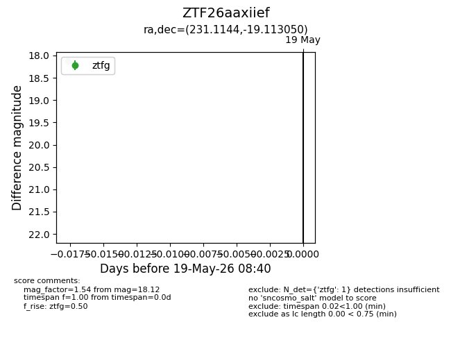
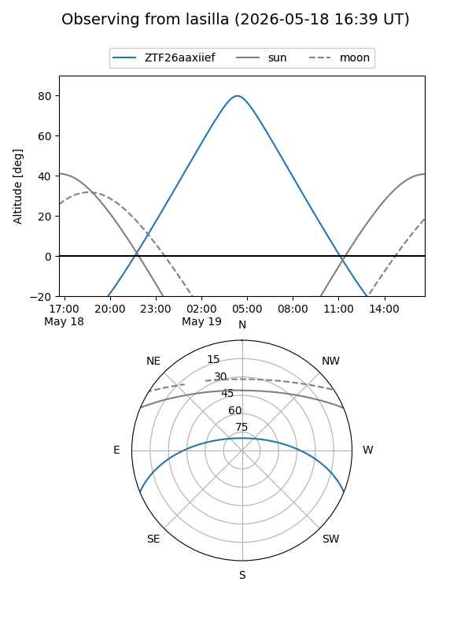
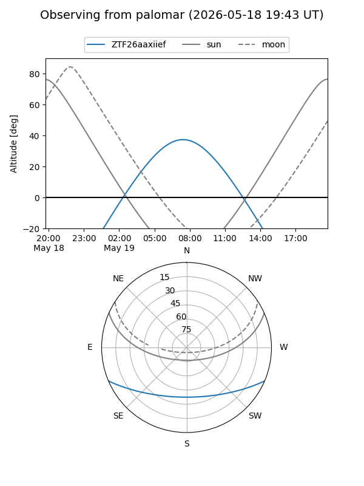

ZTF26aaxiief
Target ZTF26aaxiief at 2026-05-19 08:42
Aliases and brokers:
FINK: link
Lasair: link
ALeRCE: link
alt names
ZTF26aaxiief (ztf,fink_ztf)
Coordinates:
equatorial (ra, dec) = 231.1144,-19.11305
equatorial (HMS+DMS) = 15:24:27.45,-19:06:46.98
galactic (l, b) = (345.8240,+30.73348)
Flags:
Photometry:
last ztfg=18.12
1 ztfg detections
Lightcurve

Visibility


Additional plots